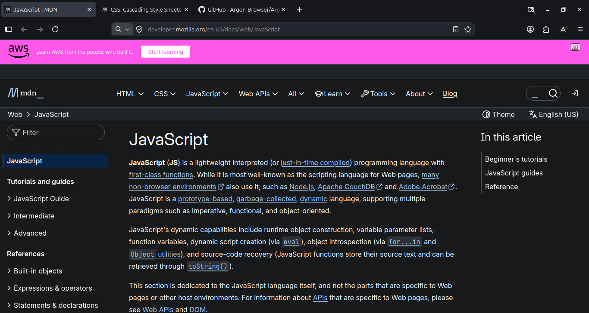
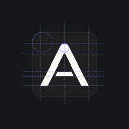

Firefox-based. Tabs your way.
Choose horizontal or vertical tabs and Light, Dark, or System themes. Argon is an independent LibreWolf & Firefox fork in prealpha, packaged as a Linux Flatpak.

Put tabs across the top or down the side
Choose horizontal or vertical tabs to suit the way you browse.
Use Light or Dark, or let the System theme follow your desktop.
Inspect any manifest before it touches your profile
Installing a Chromium extension should never be a black box. Argon's static
manifest.json analyzer inspects untrusted manifests through descriptor-safe
JSON sanitization without ever executing extension code.
It inventories required and optional API and host permissions, validates match-pattern
syntax, flags Chrome-specific APIs, and highlights the Manifest V3 service-worker
lifecycle gap in the report.
Try the real analyzer right here: choose a preset or paste any
manifest.json to inspect the static report and CLI exit code.
A Firefox fork you can inspect
Instead of hiding changes inside a massive copy of mozilla-central, Argon
maintains a clean, reviewable overlay on top of a cryptographically pinned Firefox
source revision (config/firefox.lock.json).
Before python3 scripts/argon.py apply writes a single byte, it verifies
the SHA-256 of every upstream file it touches. If upstream drifts, the apply step
aborts all-or-nothing.
Every design token, preference override, branding asset, and build test is open source
and verifiable locally.
dist/bin/argon (--with-app-name=argon)
~/.argon/argon (MOZ_APP_PROFILE=argon)
Argon · WM_CLASS=argon · org.argon.browser
MOZ_APP_ID & Firefox UA tokenCompare Argon layouts and themes
These are captures of the Argon development build running on Linux,
taken from a native window with no automation overlays.
Drag the slider handle (or focus it and press ← / →) to
compare vertical and horizontal tabs, or the Dark and Light themes, at the
same window size.

The Argon mark, measured
The Argon mark is a flat rounded square (rx = 20 on a
128 × 128 coordinate grid, 15.625% corner radius) in
Argon Obsidian (#1E1E1E) carrying a warm
Argon Ivory (#FBF8F4) geometric "A" with
a circularly rounded apex cap (r = 8.55 u) and a detached floating
trapezoidal crossbar separated by a 6.5 u air gap.




Try Argon on Linux
Argon is currently in Phase 1 (Milestone 0.1: Visual Foundation).
The verified CI run attaches a single-file Linux Flatpak bundle
(org.argon.browser) to its GitHub Actions artifacts.
To build from the pinned LibreWolf & Firefox source lock instead, follow the workflows
below.
scripts/argon.py) is implemented and
covered by Python build and branding tests. A full source compile requires
roughly 40 GB of disk and 8 GB of RAM; use npm run build:artifact
for fast CSS, JavaScript, and XHTML iteration.
1 · Fast front-end loop
Artifact ModeVerify your machine environment, fetch the pinned Firefox source, apply the Argon overlay, and run an artifact build for CSS/JS/XHTML work.
npm run doctor npm run fetch && npm run apply npm run build:artifact
2 · Full source compile
dist/bin/argon
Compile the standalone argon binary with independent vendor,
MOZ_APP_PROFILE=argon, and Linux Flatpak packaging.
npm run bootstrap npm run build npm run package && npm run flatpak
3 · Run verification suites
Node + Python + GeckoRun the Node unit suites, Python build and branding suites, and live Gecko Marionette chrome geometry assertions locally.
npm test && npm run test:python .cache/browser-venv/bin/python tests/browser/test_chrome.py
Frequently asked questions
Architecture, privacy defaults, extension compatibility, and verification status
Does Argon collect telemetry or run remote studies?
No. Argon builds do not set MOZ_TELEMETRY_REPORTING or
MOZILLA_OFFICIAL, and the default preferences in
argon/preferences/argon-prefs.js (included into
browser/app/profile/firefox.js at build time) disable Mozilla data
submission, health reports, Normandy experiments, and Shield studies out of the box.
argon.telemetry.enabled defaults to false, and the crash
reporter and background updater are disabled in config/mozconfig.
Will Argon touch or overwrite my existing Firefox profile?
Never. Argon configures MOZ_APP_PROFILE=argon,
MOZ_APP_VENDOR=Argon, and MOZ_APP_REMOTINGNAME=argon. It
uses its own profile directory and window remoting channel, so it never opens, locks,
or migrates an existing Firefox profile in place.
What is already verified today vs. planned for later phases?
Verified today (Phase 1, Milestone 0.1): the CSS design tokens, flat
48 px toolbar, Light/Dark/System Auto theme switcher, and horizontal/vertical native
tab switching are verified against real Gecko in Marionette
(tests/browser/test_chrome.py); the fork build tool
(scripts/argon.py), Linux branding package, and Module 1 of the Extension
Bridge (manifest-analyzer.mjs) are verified by automated Node and Python
test suites.
Pending / Planned: producing the first compiled
dist/bin/argon release binary on a full build runner; Phase 2–3 UI
deliverables (Command Palette, Workspaces, about:argon); and Phase 4
Extension Bridge runtime modules (API shims, MV3 service-worker bridge, CRX/ZIP
installer, and testing the 50 extensions in benchmark-registry.json,
which are currently marked NOT_TESTED).
How is Argon maintained across new Firefox releases?
Argon uses the pinned-upstream overlay model. config/firefox.lock.json
records the exact upstream Firefox revision and the SHA-256 of every file Argon
patches, while config/overlay.json declares every insertion and
replacement. Updating upstream means bumping the lock, running
npm run apply, and resolving any hook where upstream changed.
How is Argon licensed?
Argon repository code is covered by the root MIT LICENSE, while modified
Firefox and Gecko files remain under the Mozilla Public License 2.0 (MPL 2.0).
Distributed binaries use independent Argon artwork and wordmarks in compliance with
the Mozilla Trademark Distribution Policy.